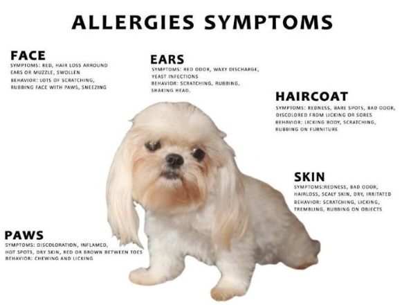
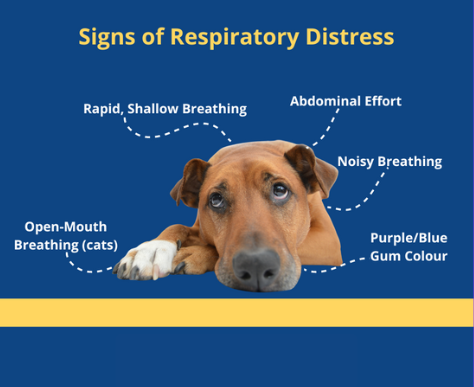
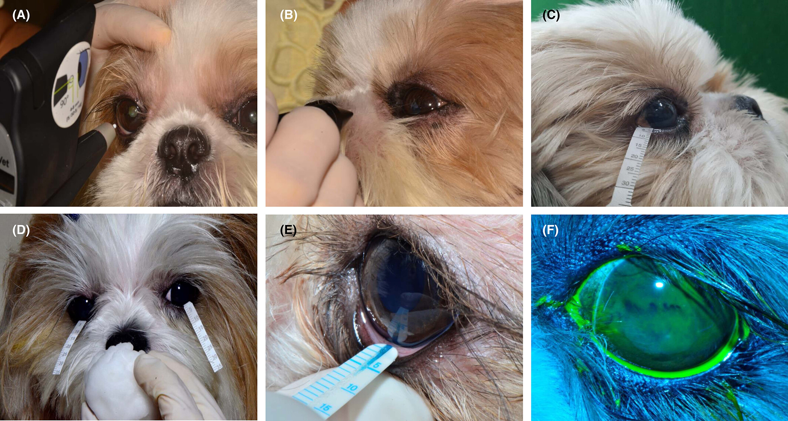
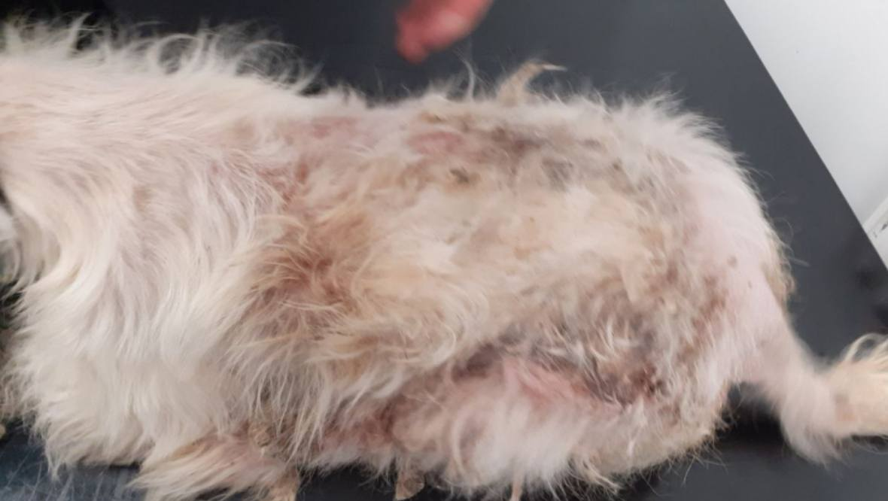
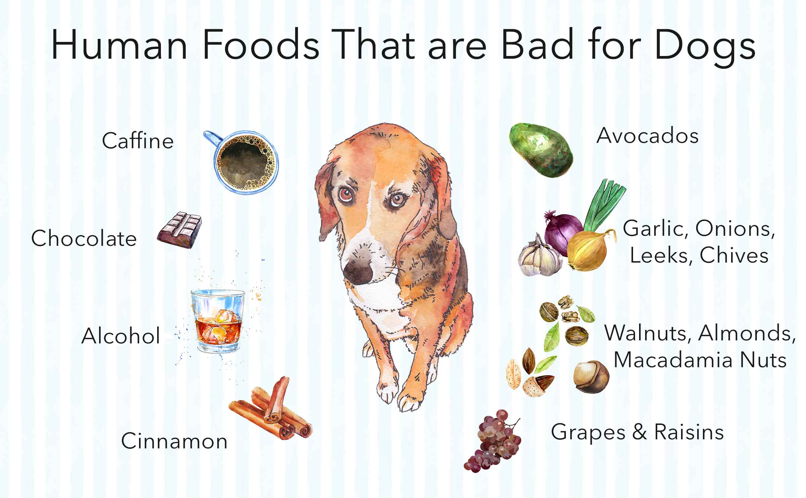
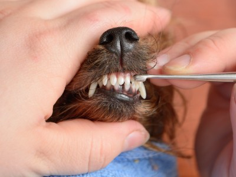

SYMPTOMS
1. GENERAL HEALTH ISSUES
"Breathing, joints, allergies."

Shih Tzus are prone to breathing issues, joint problems, spinal disorders,
eye and ear infections, allergies, dental disease, obesity, and kidney disease.
Regular care, a proper diet, and vet check-ups help maintain their health.

2. RESPIRATORY AND NASAL ISSUES
"Breathing, snoring, overheating."

Breathing difficulties, snoring, wheezing, nasal congestion, overheating,
sneezing, coughing, shortness of breath, and airway obstruction.
3. EYE AND VISION PROBLEMS
"Dryness, infections, cataracts."

Irritation, dryness, redness, excessive tearing, infections, ulcers, cataracts,
glaucoma, vision loss, and sensitivity due to their prominent eyes.
4. SKIN AND COAT CONDITIONS
"Itching, infections, matting."

Itching, dryness, redness, allergies, infections, hot spots, dandruff, hair loss,
matting, and sensitivity due to their dense coat and sensitive skin.
5. DIGESTIVE AND STOMACH ISSUES
"Vomiting, diarrhea, bloating."

Vomiting, diarrhea, bloating, constipation, food sensitivities, indigestion, acid
reflux, poor appetite, and upset stomach due to their sensitive digestive system.
6. EAR AND HEARING PROBLEMS
"Infections, wax, hearing loss."
Infections, itching, redness, wax buildup, discharge, foul odor, inflammation,
hearing loss, sensitivity, and discomfort due to their floppy ears.
7. MOBILITY AND JOINT ISSUES
"Stiffness, limping, arthritis."
Stiffness, pain, limping, swelling, joint instability, muscle weakness, difficulty
walking, arthritis, hip dysplasia, and reduced mobility due to their small frame.
8. BEHAVIORAL CHANGES
"Anxiety, aggression, restlessness."
Anxiety, aggression, excessive barking, clinginess, restlessness, lethargy,
mood swings, disobedience, fearfulness, and sudden temperament shifts
due to stress, health issues or environmental changes.
9. DENTAL AND MOUTH PROBLEMS
"Tooth decay, infections, pain."

Tooth decay, gum disease, bad breath, plaque buildup, tartar, tooth loss,
infections, mouth pain, difficulty eating, and overcrowded teeth due to their small jaws.